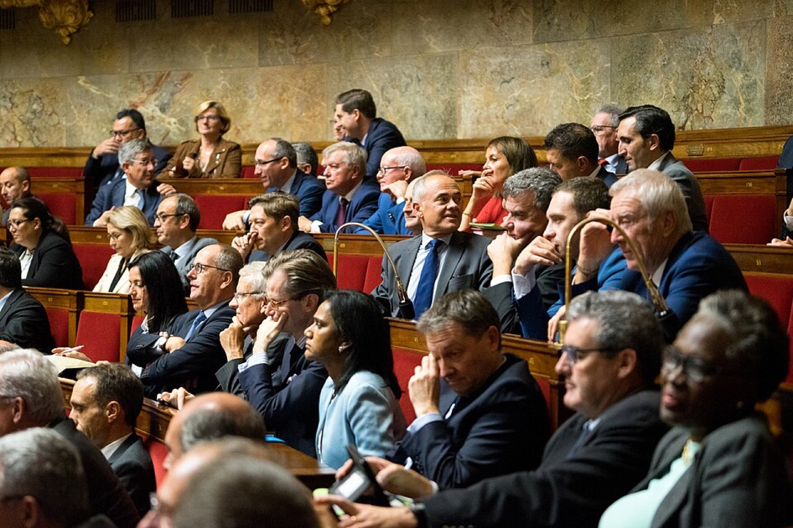
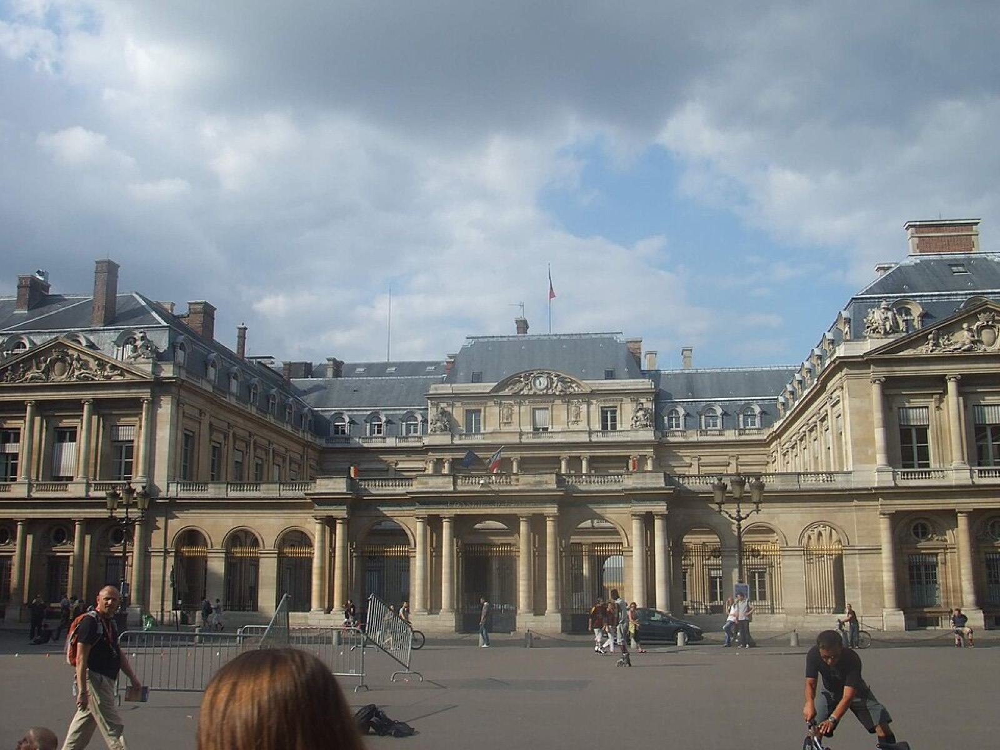

Legal Restrictions
The 2004 headscarf ban, the 2010 full-face veil ban, the 2021 separatism law, the 2023 abaya ban, the sports prohibitions, and the asylum restrictions: universal in language, selective in application.
France has built, over two decades, the most elaborate legal architecture of religious restriction in Western Europe. Each law was framed in universal terms (applying to "all conspicuous religious symbols" or "all face coverings"), but each was politically motivated by, debated in terms of, and applied disproportionately to, Islamic religious practice.
- 1905 Law on the Separation of the Churches and the State. Liberal settlement establishing independence of state from religion, freedom of conscience, non-discrimination. Protective
- 1989 The Creil affair: three girls expelled from a public school for wearing headscarves. The opening of two decades of "headscarf controversy."
- 2004 Loi du 15 mars: ban on "conspicuous" religious symbols in public primary and secondary schools. Restrictive
- 2010 Loi du 11 octobre: ban on full-face veils in any public space; €150 fine. Upheld by the European Court of Human Rights in S.A.S. v. France (2014). Restrictive
- 2015-17 State of emergency declared after Bataclan; 3,289 warrantless searches in three months, only five tied to terrorism investigations. Surveillance
- 2017 SILT law: state-of-emergency powers made permanent. House arrests renamed "individual measures of administrative control"; warrantless searches renamed "home visits." Surveillance
- 2021 Loi confortant le respect des principes de la République ("separatism law"). 800+ establishments closed in the first year, including mosques, prayer rooms, schools, associations, and restaurants. Restrictive
- 2023 Abaya ban in public schools. Sports federation hijab bans extended (basketball, volleyball). French athletes barred from wearing the hijab at the 2024 Paris Olympics. Restrictive
The 2004 Headscarf Ban (Loi du 15 mars 2004)
Law no. 2004-228 prohibits the wearing of "conspicuous" religious symbols in public primary and secondary schools. While formally applying to large Christian crosses, Jewish kippahs, and Sikh turbans, the political debate that produced the law was entirely about the Muslim headscarf, following two decades of controversy that began with the 1989 Creil affair, when three girls were expelled for wearing headscarves to school.
The 2010 Full-Face Veil Ban (Loi du 11 octobre 2010)
Law no. 2010-1192 prohibits face covering in public space. Wearing the niqab or burqa in any public area (street, shop, public transport) is punishable by a €150 fine. A French citizen of Pakistani origin challenged the law at the European Court of Human Rights in S.A.S. v. France (2014); the court upheld the ban by 15 votes to 2, justifying it on the grounds of "le vivre-ensemble" (living together), even while noting that:
A state which enters into a legislative process of this kind takes the risk of contributing to the consolidation of the stereotypes which affect certain categories of the population and of encouraging the expression of intolerance. (S.A.S. v. France 2014, paragraph 149)
In 2018, the UN Human Rights Committee found that the ban violated the human rights of those who wore the niqab (CNN 2023).
The 2021 Separatism Law (Loi confortant le respect des principes de la République)

Law no. 2021-1109, promulgated 24 August 2021, was Macron's flagship legislative response to the 2020 murder of teacher Samuel Paty. Officially "reinforcing respect for the principles of the Republic," it was understood by both supporters and opponents as targeting "Islamist separatism," Macron's own framing in his October 2020 Les Mureaux speech. Its provisions:
- Subject religious associations to government review of their bank accounts and require declaration of foreign donations
- Allow administrative dissolution of associations deemed to "encourage hate"
- Extend the principle of neutralité (banning religious symbols) from civil servants to all private contractors providing public services, meaning, for instance, that a Muslim employee of a contracted bus company can no longer wear a hijab at work
- Require associations receiving public subsidies to sign a "contract of republican engagement"
- Require government authorization for home schooling
- Criminalize the issuance of "virginity certificates" (a measure framed as women's rights)
- Refuse residency to any foreigner found to be in a polygamous arrangement
- Create a new criminal offense of online hate speech endangering public officials
One year after adoption, the law had led to the closure of more than 800 establishments, including mosques, prayer rooms, private schools, cultural associations, and restaurants (Cesari 2023). Between 2018 and 2020 (even before the law was passed), the French state had already shut down 672 Muslim-run entities (Al Jazeera 2025).
The political scientist Jocelyne Cesari has analyzed this trajectory as "securitisation," which she defines as the range of "political actions targeting Muslims within the bounds of regular political procedures not directly relevant to the prevention of terrorism" (Cesari 2023). The law's own name is revealing: by framing the legitimate practice of Islam as potential "separatism," it inscribes Muslim difference itself as a threat to republican unity.
The 2023 Abaya Ban

On 27 August 2023, Education Minister Gabriel Attal announced that the abaya (a long, loose dress worn by some Muslim women) would be prohibited in public schools, citing laïcité and arguing that "you must not be able to identify the religious identity of students just by looking at them" (CNN 2023). Importantly, the abaya is not in itself religious garb; it is a cultural garment that can be worn by anyone and that Muslims themselves describe as traditional rather than devotional (Al Jazeera 2023a). The Council of State upheld the ban on 7 September 2023, asserting that the wearing of the abaya "follows the logic of religious affirmation" (Al Jazeera 2023b). Amnesty International condemned the ban as a violation of France's international human rights obligations and called for its repeal (Amnesty International 2023).
On the first day of the 2023 school year, 298 girls wore abayas to school; 67 refused to remove them and were sent home (CNN 2023).
What the abaya ban demonstrates with unusual clarity is the operation of Mamdani's Culture Talk at the level of administrative decree: the state is empowered to read religious meaning into cultural garments, then ban them on the basis of the reading it has imposed. Martín-Muñoz observes that the analogous European debate about freedom of expression and the cartoons of Mohammed could not be reduced to an abstract question of free speech because:
What converted the publication of the cartoons in the Danish newspaper Jyllands-Posten into a powder-keg situation was the Islamophobic nature and incitement of hatred deriving from the portrayal of the founder of Islam as a terrorist. The nature of the message was clear: if the founder of Islam was a terrorist then all its members are terrorists. (Martín-Muñoz 2010, 27)
The structural mirror image operates in the abaya case: the state defines a garment as religious so that it can define the wearer as a transgressor of secular order. Both cases convert a single cultural sign into a verdict on a billion people.
Sports Bans
France's Football Federation (FFF) has banned the hijab in football since 2006; the basketball federation followed in 2022 and the volleyball federation in 2023 (ABC News 2024). In June 2023 France's Council of State upheld the FFF ban, accepting the federation's argument that prohibition was justified to "avoid clashes or confrontation," a reasoning Amnesty International characterized as "extremely problematic" because it implicitly justifies discrimination against the victim of potential discrimination (Amnesty International 2024).
In the run-up to the 2024 Paris Olympics (promoted as the first "gender-equal" Games), the French Sports Ministry confirmed that French athletes representing France could not wear the hijab in competition, on the grounds that they are considered "civil servants" subject to laïcité (Time 2024). French sprinter Sounkamba Sylla revealed shortly before the Games that she would not be allowed to participate in the Opening Ceremony because of her headscarf (ABC News 2024). Amnesty International concluded that the policy "breaches international human rights treaties to which France is a party" (Jurist 2024). Notably, athletes representing other countries faced no such restriction at the Paris Games, meaning France's host policy applied a stricter standard to its own Muslim citizens than to foreign visitors.
Immigration and Refugee Policy
France's restrictions extend to non-citizens. The 2021 law refuses residency permits to applicants found to be in polygamous arrangements (a status France itself does not recognize but which it polices retroactively in immigration files). Beginning under Sarkozy's interior ministry and continuing under successive governments, France has heavily securitized asylum processing for applicants from Muslim-majority countries. Human Rights Watch's 2025 World Report documents how the broader policy environment toward Muslim immigration has hardened in tandem with the domestic laïcité apparatus, with restrictive asylum reforms and intensified administrative scrutiny of associations linked to Muslim immigrant communities (HRW 2025).